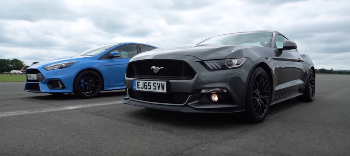

FORD
Ford és una empresa multinacional nord-americana fabricant d'automòbils amb base a Dearborn, Michigan, Estats Units. Va ser fundada el 16 de juny de 1903 per Henry Ford a Detroit, Michigan. Segons la revista Fortune, DaimlerChrysler i Toyota Motor van superar a Ford situant-se com el segon i tercer grup de constructors d'automòbils mundial amb més ingressos l'any 2004. Durant molts anys Ford va ser el primer fabricant global per davant de General Motors. Ford continua essent una de les 500 corporacions més grans per ingressos.